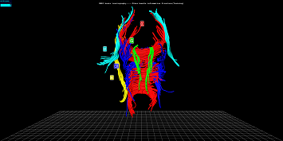

Training
Important: You brownser should support WebGL, You could open http://get.webgl.org/ to have a test. You should see a spinning cube. If you do not, please visit the support site for your browser or find an computer that support WebGL
Description
What you will see today is a
diffusion tensor MRI or
DTI visualization. DTI is an in-vivo MRI technique that measures the motion of water molecules.
The technique can be used to study the connectivity of brain regions and distribution of neuro-pathways.
The pathways can be represented using a technique called DTI tractography, each tract representing water
molecules in motion along the main direction. You can see the picture:


 .
.
In biomedicine, different anatomical region are named.Different fiber bundles follow different directions. From the whole dataset (see the upper right picture), we just pick up 5 major fiber bundles:
- Corpus callosum or CC;
- Cingulum or CG;
- Corticospinal tract or CST;
- Inferior frontaloccipital fasciculus, or IFO;
- ILF (inferior longitudinal occipitotemporal fasciculus, anterior to posterior).
Interaction
Please Open The

Training WebSite Now!
When you open the website, you will see a 3D brain model. You can rotate
the model by left-mouse dragging and zoom in or out by the “wheel” the mouse, Please try it now.
The corpus callosum or CC(colored with ‘Red’) is the only bundle that connects the left and right hemispheres. In the picture, CG(colored with ‘Green’) is the green bundle sitting right on top of corpus callosum. It is also very thin. The cortocospinal tract or CST (in blue) has a fan shape. The last two fiber bundles of IFO(in yellow) and ILF(in cyan). It is easy to confuse these two, because they originate from the same anatomical regions. ILF goes all the way from anterior to posterior, while IFO turns to the lateral direction. Also note that this person is normal but one side of the IFO is missing (perhaps due to the low-resolution sampling). All tasks that you will be performing will be related to these five bundles only.
Simple Task Description
Our study focus on "artist line drawing to convey X information", where X could be depth,
FA, or whatever information we care. So this is the most important thing that your
drawing should convey X information for the DMRI model in each task. After your finish each drawing,
you should depict "How your drawing convey X information" as clear as possible in the questionnaire.
For the detail task description, Please visit the
Brain Tractography Tasks Now!
Welcome. Thanks for participating in our study.
You can ask questions about this research study now or any time during the study by e-mailing Yongnan Zhu at
yongnan@umbc.edu